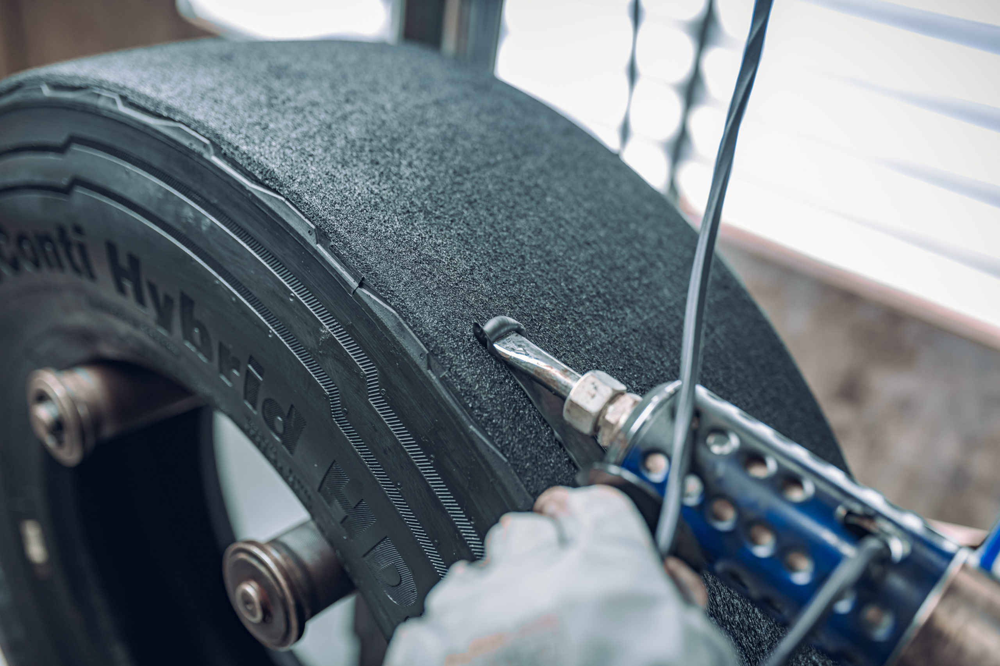
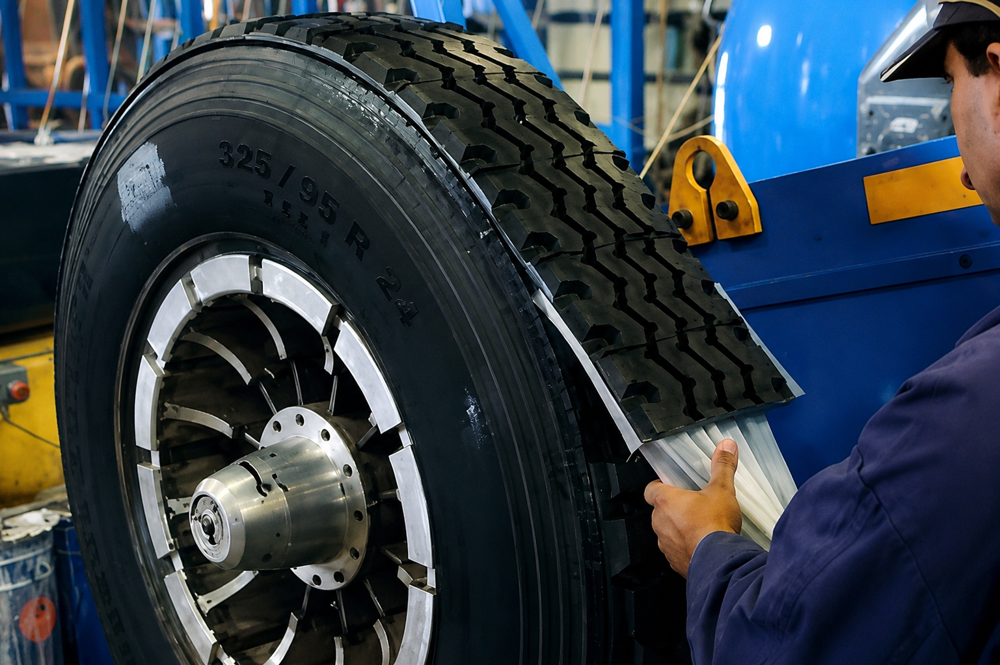
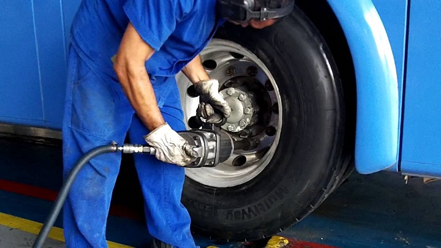

O que fazemos


Serviços Central Pneus
Estrutura completa para carro de passeio e veículo pesado, do pneu à manutenção mecânica.

Pneus novos, usados e reformados
Opções para todo orçamento, com procedência garantida e marcas parceiras oficiais.
Consultar no WhatsApp →
Recapagem de pneumáticos
Reforma profissional que estende a vida útil do pneu com segurança e economia.
Ver o processo de recapagem →Alinhamento e balanceamento
Precisão para rodar com estabilidade, economia de combustível e desgaste uniforme.
Agendar no WhatsApp →Borracharia especializada
Reparo, montagem e desmontagem com equipe experiente em pneus de todos os portes.
Falar no WhatsApp →Manutenção para caminhões
Serviços mecânicos gerais voltados ao cuidado de veículos de carga.
Falar no WhatsApp →
Truck Center / Frotas
Atendimento dedicado a empresas e frotas, com agilidade para não parar a operação.
Conhecer o Truck Center →